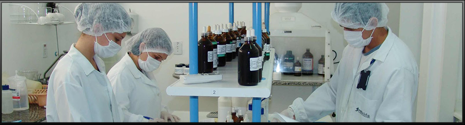

História
Compromisso com a precisão diagnóstica
Confiance Medicina Diagnóstica iniciou suas atividades em 19 de Fevereiro de 2001 com o compromisso de prestar serviços laboratoriais com
a mais alta qualidade.
Um diagnóstico correto depende de vários critérios: uma boa avaliação clínica, resultados laboratoriais precisos e confiáveis, além
de profissionais altamente qualificados.
O Confiance Medicina Diagnóstica realiza exames de análises clínicas plenamente confiáveis porque possui precisão analítica, controle
constante da qualidade, alta tecnologia, coleta humanizada e acolhedora, além de uma equipe de profissionais com 20 anos de experiência
e atuação na área de Patologia Clínica - Medicina Laboratorial, que trabalham eficientemente, contribuindo no aprimoramento diagnóstico
e na promoção da saúde.
Nossa Missão
"Realizar com excelência técnica, dentro de princípios rigorosos de ética e humanização, os serviços e procedimentos diagnósticos em Medicina
Laboratorial, contribuindo para a prevenção de doenças e a promoção da Saúde."